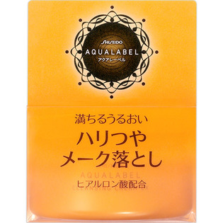

返回列表
产品名称：アクアレーベル メーク落としクリーム

資生堂 アクアレーベル メーク落としクリーム ＿
メーカー 資生堂
JANコード 4901872277834
商品の特徴
満ちるうるおい
ハリつや
ヒアルロン酸配合
- 成分・分量
- -
- 用法及び用量
- ＜使用方法＞
●手や顔をぬらさずにお使いください。
●指先にさくらんぼ1コ分を目安にとり、ファンデーションや汚れとよくなじませたあと、ふきとるか洗い流します。（マッサージをするときは、1分間くらいやさしくマッサージします。）
●ウオータープルーフのマスカラなどは、専用のクレンジングをお使いいただくことをおすすめします。
○効果的な使い方
1．ほおや額などの広い部分から、らせんを描きながら顔のすみずみまで、ていねいになじませます。
2．目のまわりや小鼻の脇など細かい部分は指先でていねいに。